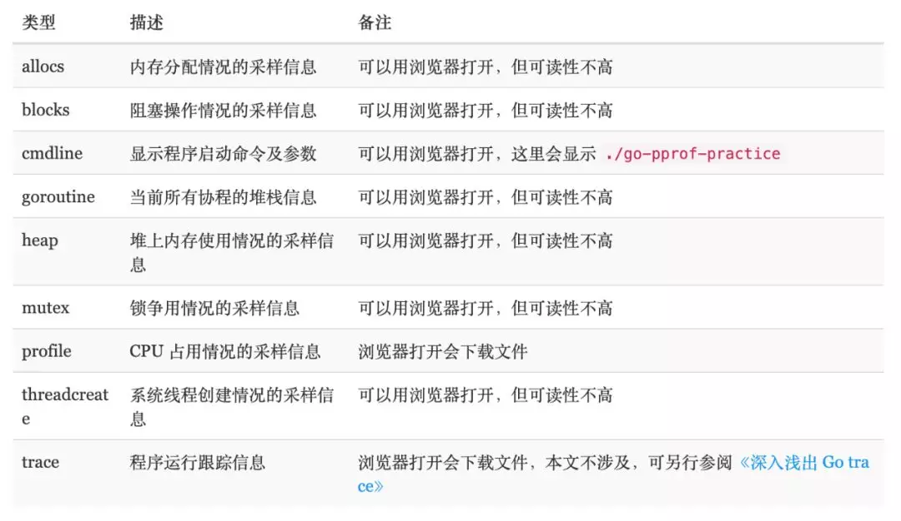

性能优化pprof
- 值得收藏深度解密系列: Go语言之 pprof
- 实战Go内存泄露
- wolfogre 非常精彩的实战文章
- FlameGraph: Stack trace visualizer
- google pprof
- 如何读懂pprof grap
- pprof暴露的风险
1. shell内置time指令
使用time ./test对执行程序做了性能分析, 得到3个指标.
real: 从程序开始到结束, 实际度过的时间；user: 程序在用户态度过的时间；sys: 程序在内核态度过的时间.
一般情况下 real >= user + sys, 因为系统还有其它进程(切换其他进程中间对于本进程会有空白期).
2 /usr/bin/time指令
这个指令比内置的time更加详细一些, 使用的时候需要用绝对路径, 而且要加上参数
-v
- CPU占用率；
- 内存使用情况；
- Page Fault 情况；
- 进程切换情况；
- 文件系统IO；
- Socket 使用情况
- ...
$ /usr/bin/time -v ./test
Command being timed: "./test"
User time (seconds): 0.12
System time (seconds): 0.06
Percent of CPU this job got: 115%
Elapsed (wall clock) time (h:mm:ss or m:ss): 0:00.16
Average shared text size (kbytes): 0
Average unshared data size (kbytes): 0
Average stack size (kbytes): 0
Average total size (kbytes): 0
Maximum resident set size (kbytes): 41172
Average resident set size (kbytes): 0
Major (requiring I/O) page faults: 1
Minor (reclaiming a frame) page faults: 15880
Voluntary context switches: 897
Involuntary context switches: 183
Swaps: 0
File system inputs: 256
File system outputs: 2664
Socket messages sent: 0
Socket messages received: 0
Signals delivered: 0
Page size (bytes): 4096
Exit status: 0
3. pprof
pprof 支持四种类型的分析:
CPU:CPU分析, 采样消耗cpu的调用, 这个一般用来定位排查程序里耗费计算资源的地方；Memory: 内存分析, 在应用程序进行堆分配时记录堆栈跟踪, 用于监视当前和历史内存使用情况, 以及检查内存泄漏;Block: 阻塞分析, 记录 goroutine 阻塞等待同步 (包括定时器通道) 的位置Mutex: 互斥锁分析, 采样互斥锁的竞争情况；
明确几个重要的点:
- golang 内存
pprof是采样的, 每512KB采样一次； - golang 的内存采样的是堆栈路径, 而不是类型信息；
- golang 的内存采样入口一定是通过
mProf_Malloc,mProf_Free这两个函数.所以, 如果是 cgo 分配的内存, 那么是没有机会调用到这两个函数的, 所以如果是 cgo 导致的内存问题,go tool pprof是分析不出来的；
3.1. pprof的作用
pprof 是 Go 语言中可视化和分析程序运行性能的工具.
pprof 以 profile.proto 读取分析样本的集合, 并生成报告以可视化并帮助分析数据 (支持文本和图形报告).
profile.proto 是一个 Protocol Buffer v3 的描述文件, 它描述了一组 callstack 和 symbolization 信息, 作用是表示统计分析的一组采样的调用栈, 是很常见的 stacktrace 配置文件格式.
它能提供各种性能数据:

allocs和heap采样的信息一致, 不过前者是所有对象的内存分配, 而heap则是活跃对象的内存分配. 关于 goroutine 的信息有两个链接,
goroutine: 一个汇总的消息, 可以查看 goroutines 的总体情况full goroutine stackdump可以看到每一个 goroutine 的状态.
- CPU Profiling: 当 CPU 性能分析启用后, Go runtime 会每 10ms 就暂停一下, 记录当前运行的 goroutine 的调用堆栈及相关数据.当性能分析数据保存到硬盘后, 我们就可以分析代码中的热点了.
- Memory Profiling: 内存性能分析则是在堆 (Heap) 分配的时候, 记录一下调用堆栈.默认情况下, 是每 1000 次分配, 取样一次, 这个数值可以改变.栈(Stack)分配, 由于会随时释放, 因此不会被内存分析所记录. 由于内存分析是取样方式, 并且也因为其记录的是分配内存, 而不是使用内存. 因此使用内存性能分析工具来准确判断程序具体的内存使用是比较困难的.
- Block Profiling: 阻塞分析是一个很独特的分析, 它有点儿类似于 CPU 性能分析, 但是它所记录的是 goroutine 等待资源所花的时间.阻塞分析对分析程序并发瓶颈非常有帮助, 阻塞性能分析可以显示出什么时候出现了大批的 goroutine 被阻塞了.阻塞性能分析是特殊的分析工具, 在排除 CPU 和内存瓶颈前, 不应该用它来分析.
- Mutex Profiling: 互斥锁分析, 报告互斥锁的竞争情况
3.1.1 如何使用
-
runtime/pprof: 采集程序(非Server)的运行数据进行分析, 主要针对只跑一次的程序, 具体查看runtime/pprof相关api -
net/http/pprof: 采集程序(Server)的运行时数据进行分析, 可提供一个HTTP接口http://localhost:8080/debug/pprof/进入浏览器页面,查看相关的汇总信息
3.1.2 分析
example:
package main
import (
"fmt"
"math/rand"
"net/http"
"os"
"strconv"
"time"
_ "net/http/pprof"
)
func main() {
fmt.Println(os.Getpid())
fmt.Println("http://localhost:8080/debug/pprof")
go func() {
http.ListenAndServe(":8080", nil)
}()
// busy working....
// Force the GC to work to make the plots "move".
m := map[string][]byte{}
for {
b := make([]byte, 512+rand.Intn(16*1024))
m[strconv.Itoa(len(m)%(10*100))] = b
if len(m)%(10*100) == 0 {
m = make(map[string][]byte)
}
time.Sleep(10 * time.Millisecond)
}
}
通过命令交互分析
- 通过得到profile文件直接进入分析
go tool pprof ./profile
- 通过url地址直接进入分析
# 下载 cpu profile, 默认从当前开始收集 30s 的 cpu 使用情况, 需要等待 30s
go tool pprof http://localhost:8080/debug/pprof/profile
# wait 120s
go tool pprof http://localhost:8080/debug/pprof/profile?seconds=120
# 下载 heap profile
go tool pprof http://localhost:8080/debug/pprof/heap
# 切换内存分析的类型
go tool pprof -sample_index=alloc_space http://localhost:8080/debug/pprof/heap
# 下载 goroutine profile
go tool pprof http://localhost:8080/debug/pprof/goroutine
# 下载 block profile
go tool pprof http://localhost:8080/debug/pprof/block
# 下载 mutex profile
go tool pprof http://localhost:8080/debug/pprof/mutex
命令行支持命令:
callgrind:callgrind格式主要用于KCachegrind工具, 可视化分析函数调用和执行情况.comments: 输出所有的profile注释信息, 帮助开发者了解和记录性能分析的元数据.disasm: 输出带有采样注释的汇编代码列表.此功能对于需要深入了解程序在汇编级别的性能表现非常有用.dot: 生成DOT格式的图表. DOT格式是一种图形描述语言, 可以用于Graphviz工具, 进行复杂的图形可视化.eog: 通过eog工具可视化图表.此命令将生成的图表直接在eog中打开.evince: 通过evince工具可视化图表, 与eog类似, 但使用的是Evince文档查看器.gif: 生成GIF格式的图像, 便于在网页和报告中嵌入性能分析图表.gv: 通过gv工具可视化图表. gv是一个基于X11的PostScript和PDF查看器.kcachegrind: 在KCachegrind工具中可视化报告.KCachegrind是一个强大的性能分析工具, 特别适用于处理callgrind格式的文件.list: 输出与正则表达式匹配的函数的注释源代码, 帮助开发者直接在源代码级别查看性能瓶颈.pdf: 生成PDF格式的图表, 便于打印和分享peek: 输出与正则表达式匹配的函数的调用者和被调用者信息png: 生成PNG格式的图像, 与GIF类似, 但适用于需要高质量静态图像的场景.proto: 以压缩protobuf格式输出profile数据.这种格式适用于数据交换和存储.ps: 生成PostScript格式的图表, 便于高质量打印.raw: 输出原始profile数据的文本表示, 用于深入分析或自定义处理.svg: 生成SVG格式的图像, 适用于需要矢量图形的场景, 如网页嵌入和缩放显示tags: 输出profile中的所有标签信息, 帮助开发者了解和筛选性能数据text: 以文本形式输出主要的性能数据条目, 便于快速查看和分析.top: 以文本形式输出性能数据的主要条目, 类似于Linux中的top命令, 帮助开发者快速定位性能热点.topproto: 以压缩protobuf格式输出主要的性能数据条目, 结合了top和proto命令的功能.traces: 以文本形式输出所有的profile样本数据, 适用于详细的逐样本分析.tree: 以文本形式输出调用图, 帮助开发者以树形结构查看函数调用关系.web: 通过默认的网页浏览器可视化图表, 使得性能分析结果更易于共享和展示.weblist: 在网页浏览器中显示带注释的源代码, 与list命令类似, 但提供了更友好的界面.
通过可视化界面(需要graphviz支持)
go tool pprof -http=:8080 cpu.prof
或者
go tool pprof cpu.prof
(pprof) web
相关参数
- profile
flat: 本函数的执行耗时flat%: flat占CPU总时间的比例sum%: 本函数累积使用CPU总比例cum: 本函数加上调用的函数总耗时cum%: cum占CPU总时间的比例
- heap的flat, sum, cum与上面类似, 只不过计算的是内存大小
-inuse_space: 分析应用程序的常驻内存占用情况-alloc_objects: 分析应用程序的内存临时分配情况
在 cpu profile 中, 一个是方法运行的时间占比, 一个是它在采样的堆栈中出现的时间占比 (前者是 flat 时间, 后者则是 cum 时间占比); 框越大, 代表耗时越多或是内存分配越多.
解读调用图
- 节点颜色:
- 大的正
cum为红色. - 大的负
cum为绿色, 负值最有可能出现在剖面比较中 cum接近零为灰色
- 大的正
- 节点字体大小:
- 字体大小越大, 表示
flat绝对值越大. - 字体大小越小, 表示
flat绝对值越小.
- 字体大小越大, 表示
- 边权重:
- 边越厚, 表示在该路径上使用的资源越多.
- 边越细, 表示在该路径上使用的资源越少.
- 边颜色:
- 大的正值为红色
- 大的负值为绿色
- 接近于零为灰色
- 虚线边: 删除了两个相连位置之间的一些位置.
- 实线边, 两个相连位置是直接相关.
(inline)边标记: 调用已内联到调用程序中.
3.2 火焰图
可视化界面已经支持火焰图(Flame Graph),位于VIEW/Flame Graph下.更老版本pprof不支持-http参数的,可以下载其它库来支持火焰图github.com/google/pprof或者github.com/uber/go-torch
如何读懂火焰图可看: 阮一峰的如何读懂火焰图
4. 性能分析注意事项
4.1 性能分析必须在一个可重复的、稳定的环境中来进行
-
不要在共享硬件上进行性能分析;
-
不要在性能分析期间, 在同一个机器上去浏览网页
-
机器必须闲置
-
注意省电模式和过热保护, 如果突然进入这些模式, 会导致分析数据严重不准确
-
不要使用虚拟机、共享的云主机, 太多干扰因素, 分析数据会很不一致；
-
关闭电源管理、过热管理;
-
绝不要升级, 以保证测试的一致性, 以及具有可比性
如果承受得起, 购买专用的性能测试分析的硬件设备, 上架